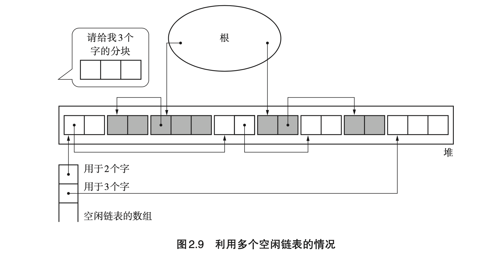
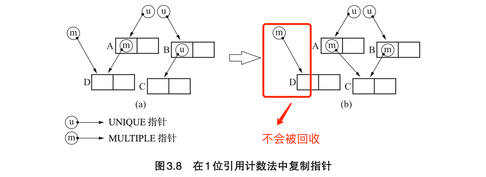

《垃圾回收算法与实现》读书笔记（第 1-5 章）
为了进一步了解 Wasm GC 提案，遂找本书来看看。
所有涉及的 GC 算法（并没有全部了解完 :(
- GC 标记-清除：
- 多个空闲链表：可优化遍历空闲链表较慢的问题；
- BiBOP 法：可优化“碎片化”问题；
- 位图标记：解决与 COW 不兼容的问题；
- 延迟清除法：可用于减小 GC 的最大暂停时间。
- 引用计数法：
- 延迟引用计数法：减轻了因根引用频繁变化而导致的计数器增减带来的额外负担；
- Sticky 引用计数法：减少引用计数器的位宽；
- 1 位引用计数法：缓存友好，且一定程度上节省内存消耗；
- 部分标记-清除算法：解决“循环引用”问题。
- GC 复制算法：
- Cheney GC 复制算法：缓解复制对象时产生额外函数调用栈的问题；
- 近似深度优先搜索方法：改良了 Cheney 的算法，对缓存友好。可尽量保证处在相同页面上的对象之间是存在引用关系的；
- 多空间复制算法：有效利用了堆。
- GC 标记-压缩：
- Two-Finger 算法：内存使用效率较 LISP2 稍高；搜索次数只有 2 次，吞吐量稍高；
- 表格算法：缓存友好；
- ImmixGC 算法：堆的精细化管理，可以有效地解决碎片化问题。
- 保守式 GC：
- 间接引用：让保守 GC 可以使用复制 GC 算法；
- MostlyCopyingGC：可在不明确的根的环境中使用 GC 复制算法；
- 黑名单：可以改善“指针错误识别”的问题。
- 分代垃圾回收：
- Ungar 分代垃圾回收算法：改善了 GC 花费的时间。分代垃圾回收花费的时间是 GC 复制算法的 1/4；；
- 多代垃圾回收：进一步改善 GC 花费的时间；
- 列车垃圾回收：（略）；
- 增量式垃圾回收：
- Steele 算法：（略）；
- 汤浅算法：（略）；
- RC Immix 算法：（略）。
Chapter 0：序章
- （Page：3）最初的 GC 算法是由 John McCarthy（Lisp 之父）在 1960 年发布的。
- （Page：4）三种基本的 GC 算法（其他均为这三种类型的衍生）：
- “标记-清除”算法；
- “引用计数”算法（无法回收“循环引用”）；
- “GC 复制“算法。
Chapter 1：学习 GC 之前
- （Page：12）GC 中的对象：即“通过应用程序利用的数据的集合”。对象配置在内存空间里，GC 根据情况将配置好的对象进行移动或销毁，是 GC 的基本单位。一个对象一般由以下两部分组成：
- 头（一个）：包含有对象的大小和种类信息，由 GC 算法进行控制和使用；
- 域（多个）：对象使用者可以直接访问的内存部分（可存放指针与非指针数据）。

- （Page：14）对象和指针：
- 若指针可以指向对象除首地址以外的地方（aliasing），则 GC 将会变得复杂（如 C/C++）。在大多数语言处理程序中，指针都默认指向对象的首地址。
- （Page：17）GC 中的“根（root*）”：是指向对象的指针的“起点”（调用栈、寄存器、全局变量空间），可以被 *mutator 直接引用。mutator 的本质即“应用程序”，其可进行两种操作 —— “生成对象”与“更新指针”。
- （Page：19）一些 GC 评判标准：
- 吞吐量（throughput）：单位时间内的处理能力，即“堆内存大小 / GC 管理内存花费的时间”；
- 最大暂停时间：因执行 GC 而暂停 mutator 的最长时间；
- 堆使用效率：可用的堆空间越大，GC 运行效率越高；而越想有效地利用有限的堆，GC 花费的时间就越长；
- 访问局部性：把具有引用关系的对象安排在堆中较近的位置，就能够提高其在缓存中读取的命中概率。
Chapter 2：“标记-清除”算法
算法由“标记”以及“清除”两个阶段组成。其中，标记阶段负责把所有活动对象都做上标记；而清除阶段则是把那些没有被标记的对象（非活动对象）进行回收。在半个世纪后的今天，该算法依然是各种处理程序常用的 GC 算法。
- （Page：26）标记阶段使用“深度优先搜索（DFS）”一般会比“广度优先搜索（BFS）”占用更低的内存使用量。因为 BFS 需要额外的栈来存放待遍历的子树（指针），最多需要存放与最后一层子节点相同个数的子树（指针）；相反，DFS 最多只会有与树高度呈正比数量的节点（指针）在内存中。
- （Page：26）“清除阶段”在整理“空闲链表”时，如果某个对象需要被清理，则可以直接动态在该对象的域中分配一个字段 next（对象原本的内容会被破坏）以存储空闲链表下一个对象的位置（指针）。
- （Page：28）“标记-清除”算法的内存再分配（从空闲链表）策略：
- First-fit：在空闲链表中一旦发现 >= 待分配大小的分块时便直接返回该分块；
- Best-fit：遍历空闲链表，返回 >= 待分配大小的最小分块；
- Worst-fit（少用）：找出空闲链表中的最大分块，将其分割为待分配大小与剩余大小的两个分块。目的是将分割后的剩余分块最大化。
- （Page：28）“标记-清除” GC 算法的几个阶段：
- 标记：标记活动对象（DFS / BFS）；
- 清除：遍历整个堆，通过整理空闲链表回收没有打上标记的对象，同时合并连续的碎片分块。除此之外，重置所有对象的标记（不需要实际清理内存）；
- 再分配：从“空闲链表”中分配需要的新内存。
- （Page：29）“标记-清除” GC 算法的特点：
- 优点：
- 实现简单；
- 与保守式 GC 算法兼容。
- 缺点：
- 碎片化（可用“压缩”或 “BiBOP” 法优化）；
- 分配需遍历空闲链表，速度较慢（可用“多空闲链表”或 “BiBOP” 法优化）；
- GC 时会设置所有活动对象的标志位，与 COW 不兼容（可用“位图标记”法优化）。
- （Page：32）多空闲链表：可用于优化分配内存时空闲链表的查找速度。通常，该方法会为分块大小设定一个上限，分块如果大于等于这个大小，就全部采用单独的一个空闲链表来进行处理（基于 locality）。

- （Page：34）BiBOP（Big Bag Of Pages）：将大小相近的对象整理成固定大小的块进行管理，即把堆分割成固定大小的块，让每个块只能够配置同样大小的对象。该算法需配合“多空闲链表”一起使用。
- 优点：一定程度上消除“碎片化”；
- 缺点：在多个块中分散残留着同样大小的对象，降低了堆的使用效率。
- （Page：35）位图标记（Bitmap Marking）：收集堆中各个对象的标志位并表格化，不跟对象本身一起管理。在标记时，不在对象头中置位，而是在“位图表格”中单独处理（实现方式：散列表、树形结构、数组等）。其优点在于：与 COW 兼容，且清除操作更加高效。
- 一些注意事项：
- 位图表格中位的位置要和堆里的各个对象一一对应（比如一个字节对应一位，或使用计数器来记录当前扫描对象的索引）；
- 打标时要先判断该标志是否已被置位，且只在没有被置位的情况下才做置位操作，以避免循环引用问题；
- 在堆为多个的情况下，一般会为每个堆都准备一个位图表格；
- 清除阶段在遍历堆整理空闲列表时，也需要同时遍历位图表格，以找到非活动对象。最后再重置位图表格，清除所有标志位。
- （Page：38）延迟清除（Lazy Sweep）：一定程度上可用于减小 GC 的最大暂停时间。其基本原理是只在分配时执行必要的遍历和清理工作。即每次需要分配内存时，直接遍历当前堆对象，查找是否有未被标记且大小合适的块可以返回，若有则返回。同时过程中，将遍历到的块置位。下次再分配时仍从上一次找到分块的右侧分块开始继续遍历，直到遍历完所有堆对象。若没有找到合适的块，则执行标记，然后再重新遍历。若仍未找到分块，则返回错误。
Chapter 3：“引用计数”算法
- （Page：43）该方式将内存管理与 mutator 的运行同时进行（而“标记-清除”法只会在没有分块时才将垃圾一并回收）。对计数器进行增减时需要“先增再减”，以避免当 \ptr* 与 obj 是同一对象时引发的“空指针引用”情况。
- （Page：44）“引用计数”算法的特点：
- 优点：
- 可即刻回收垃圾（当对象引用数值为 0 时会立刻将自身连接到空闲链表中）；
- 最大暂停时间短（仅在 mutator 更新指针时进行 GC）；
- 没有必要沿指针查找（无需“标记”过程）。
- 缺点：
- 计数器值的增减处理繁重；
- 计数器需要占用很多位；
- 实现繁琐复杂；
- 循环引用无法回收。
- （Page：46）延迟引用计数（Deferred Reference Counting）：让从*根引用的指针（栈上对象）其变化不反映在计数器上（而堆上的引用改变任会计数）。即使用 **ZCT（Zero Count Table）表结构存储引用计数变为 0 的对象。当 ZCT 无法存放对象时，会进行 *root 引用对象的计数变更，然后查找整个 ZCT 中引用计数仍然为 0 的对象，并进行释放操作。最后再将 root 引用对象的计数递减。
Deferred reference counting reduces the cost of maintaining reference counts by avoiding adjustments when the reference is stored on the stack.
On many systems, the majority of stores are made into local variables, which are kept on the stack. Deferred reference counting leaves those out and counts only references stored in heap objects. This requires compiler support, but can lead to substantial performance improvements.
- 优点：减轻了因根引用频繁变化而导致的计数器增减带来的额外负担；
- 缺点：
- 损失了“引用计数”的一大优势 — 可立即回收垃圾；
- 扫描 ZCT 的过程导致最大暂停时间延长了。
- （Page：50）Sticky 引用计数（Sticky Reference Counting）：用于减少引用计数器的位宽。对于溢出的计数：
- 可选择将其直接作为“永生对象”；
- 或在适当的时机（比如计数溢出对象达到特定数量）使用 “GC 标记-清除” 进行管理：
- 将所有对象的计数器设为 0；
- 标记阶段不实际标记对象，而是对计数器进行增量操作（注意父对象到子对象只有一次引用，入栈时要避免循环引用的问题）；
- 遍历堆，构建空闲链表，回收计数为 0 的对象；
- 继续“引用计数”的流程，直到下一次时机发生。
- （Page：52）1 位引用计数（1bit Reference Counting）：Sticky 引用计数法的一个极端例子，即引用计数器只有 1 位大小（0 - 表示被引用数为 1，1 - 表示被引用数大于等于 2）。

- 实现细节：
- 计数跟随指针，而非对象。可直接通过指针的“低二/三位”来存放这些信息（指针一般按照 4 / 8 字节对齐）；
- 通过复制某个指针（而非对象本身）来更新指针；
- 更新指针时回收 UNIQUE 指针的对象，不回收 MULTIPLE 指针的对象。
- 优点：不容易出现高速缓存缺失（仅操作指针本身），且一定程度上节省内存消耗；
- 缺点：需要单独处理计数器溢出的情况。
- （Page：55）部分标记-清除（Partial Mark & Sweep）：只对“可能有循环引用的对象群”使用 GC 标记-清除算法（这里用于查找非活动对象），而对其他对象进行内存管理时使用引用计数法。
- 该算法中有四种对象类型，对应四种颜色。实现时需要往头中分配 2 位空间，用于标记这四种颜色类型：
- 黑（BLACK）：绝对不是垃圾的对象（对象产生时的初始颜色）；
- 白（WHITE）：绝对是垃圾的对象；
- 灰（GRAY）：搜索完毕的对象；
- 阴影（HATCH）：可能是循环垃圾的对象。
- 实现细节：
- 算法会维护一个队列，以用于连接那些可能是循环引用的一部分的对象；
- 查找环的主要流程：
- scan_hatch_queue：查找可能成环的节点，并分配分块；
- paint_gray：将环中的对象，以及子对象的计数器减量；
- scan_gray + paint_black：搜索灰色对象，把计数器值为 0 的对象涂成白色;
- collect_white：收集环中对象并释放。
- scan_hatch_queue：查找可能成环的节点，并分配分块；
- paint_gray 时需要先对目标对象的子节点进行计数器减量操作，这样当发现环的时候，目标对象的计数值同样会被递减。
- 主要缺点：
- 从队列搜索对象的成本太大；
- 失去了“最大暂停时间短”这个引用计数法的优势。
Chapter 4：“GC 复制”算法
- （Page：67）“GC 复制”算法的大致流程：只把某个空间内的活动对象复制到其他空间，再把原空间里的所有对象都回收掉。原空间一般被称为 “From 空间”，存放活动对象的新空间被称为 “To 空间”。GC 复制算法是利用 From 空间进行分配的，当 From 空间被完全占满时，GC 会将活动对象全部复制到 To 空间。当复制完成后，该算法会把 From 空间和 To 空间互换（即作用对调），GC 就结束了。From 空间和 To 空间大小必须一致。这是为了保证能把 From 空间中的所有活动对象都收纳到 To 空间内。
- 实现细节：
- 每一个 From 空间的对象都会有两个字段：
- tag：标记该对象是否已被拷贝到 To 空间；
- forwarding：一个指针，记录了拷贝后该对象的位置。
- 这两个字段可以是在进行 GC 时再动态分配在旧对象上的；
- 搜索子对象时采用的是深度优先搜索（DFS）。
- 每一个 From 空间的对象都会有两个字段：
- 优点：
- 由于只搜索并复制活动对象，因此吞吐量较大，且堆越大越明显（相较于 GC 标记-清除算法）；
- 可实现高速分配；
- 不会发生碎片化，每次执行 GC 时都会进行压缩；
- 与缓存兼容。
- 缺点：
- 堆使用效率低下（堆被二等分）；
- 不兼容保守式 GC 算法；
- 递归调用函数的效率影响（消耗栈）。
- （Page：74）来自 Cheney 的“迭代进行复制算法“：优化递归的 copy 过程。
- 实现细节：
- 引入了另一个指针 scan，用于在 To 空间内搜索复制完成的对象；
- 仅使用了 forwarding 来判断某一个对象是否已被复制；
- 优先复制所有从根直接引用的对象，再通过迭代复制子对象；
- 搜索子对象时采用的是广度优先搜索（BFS）；
- 优点：
- 采用了迭代而非递归，节省内存；
- 使用“堆”模拟了“队列”（位于 free 与 scan 之间），省去了用于搜索的内存空间。
- 缺点：
- 具有引用关系的对象在堆中并不相邻，不能有效利用缓存。
- （Page：78）近似深度优先搜索方法：
- 实现细节：
- 四个重要变量：
- page：将堆分割成一个个页面的数组。page[i] 指向第 i 个页面的开头；
- local_scan：将每个页面中搜索用的指针作为元素的数组。local_scan[i] 指向第 i 个页面中下一个应该搜索的位置；
- major_scan：指向搜索尚未完成的页面开头的指针；
- free：指向分块开头的指针。
- 在新产生的页面上，会首先使用该页面的 local_scan 进行 BFS 搜索；直到页面填满后，继续按照 major_scan 所在页面的 local_scan 进行搜索；
- 四个重要变量：
- 优点：该算法可以尽量保证处在相同页面上的对象之间是存在引用关系的。
- （Page：83）多空间复制算法：把堆 N 等分，对其中 2 块空间执行 GC 复制算法，对剩下的 N-2 块空间执行 GC 标记-清除算法。
- 优点：
- 有效利用了堆。
- 缺点（GC 标记-清除算法的既有问题）：
- 分配耗费时间；
- 分块碎片化。
Chapter 5：“标记-压缩”算法
GC 标记-压缩算法由“标记阶段”和“压缩阶段”构成。其中的“标记”阶段与“标记-清除”算法中的同名阶段完全相同。接下来，需要搜索数次堆来进行压缩。压缩阶段通过数次搜索堆来重新装填活动对象。与 GC 复制算法不同的是，压缩算法不用牺牲半个堆。
- （Page：89）LISP2 算法：
- 实现细节：
- 标记阶段：与“标记-清除”算法类似。
- 压缩阶段：
- 设定 forwarding 指针；
- 更新指针；
- 移动对象。
- 优点：有效利用了堆。不会只利用半个堆，且压缩过程可以使得堆上没有碎片。
- 缺点：压缩花费计算成本。整个压缩过程需要对整个堆进行 3 次搜索，因此其吞吐量要劣于其他算法。
- （Page：95）Two-Finger 算法：需要搜索 2 次堆。

- 制约条件：必须将所有对象整理成大小一致（才可以方便对象间的移动）；
- 实现步骤：
- 移动对象；
- 更新指针。
- 实现细节：
- 不需要提前为 forwarding 指针预留空间（即保留字段），可以在 GC 运行时直接在对象域上进行分配；
- 名为 live 和 free 的两个指针依次从堆首和堆尾相向遍历，live 用于寻找活动对象（原空间）；free 用于寻址非活动对象（目标空间）；
- “更新指针”的过程只用处理原指针位置大于 free 的那些。
- 优点：
- 内存使用效率较 LISP2 稍高；
- 搜索次数只有 2 次，吞吐量方面占优势。
- 缺点：
- 缓存不友好（改变了对象的相对顺序）；
- 对对象大小有限制。
- （Page：100）表格算法：
- 实现步骤：
- 移动对象（群）以及构筑间隙表格（break table）；间隙表格由 (live, size) 组成；
- 更新指针（通过 “bt”）。
- 实现细节：
- 活动对象群的移动是连续的，其中 scan 指针用于寻找活动对象群；free 指针是指向对象群目标空间的指针；live 指针用于标记活动对象的原空间位置；
- 随着对象的移动，“间隙表格”会被放在空闲空间里；随着“移动对象群”的过程进行，间隙表格也需要动态地在内存中调整位置；
- 更新指针时，由于 bt 只记录了连续活动对象的移动信息，因此对于具体的各个分块指针来说，在这一步需要找到所属那个连续分块的 bt*，以找到正确的 *size 偏移值。
- 优点：缓存友好（GC 前后，对象相对顺序没有改变）。
- 缺点：
- 维持间隙表格需要付出很高的代价（逻辑较复杂）；
- 由于 bt 的在内存中的顺序并不固定，因此更新指针时搜索表格会有一定开销。
- （Page：106）ImmixGC 算法：将 GC 标记-清除算法与压缩组合在了一起。该算法被实现到了 JikesRVM 与 MMTk 中。
- 分配过程：
- 算法说明：
- 该算法把堆分为一定大小的“块”（block），再把每个块分成一定大小的“线”（line）。该算法以线为单位回收垃圾。
- 块最合适的大小是 32K 字节，线最合适的大小是 128 字节（来自论文陈述）；
- 块的字段组成：
- line[]：每个块的线；
- mark_table[]：与每个线对应的标记位串。可以对应四个值：
- FREE：没有对象；
- MARKED：标记完成；
- ALLOCATED：有对象；
- CONSERVATIVE：保守标记。
- status：表示每个块中的使用情况。可对应三个值：
- FREE：所有线为空（默认情况）；
- RECYCLABLE：一部分线为空；
- UNAVAILABLE：没有空的线。
- hole_cnt：记录各个块的“孔”数。孔拥有连续的大于等于 1 个的空的线。该字段用于表示碎片化严重程度。
- 对象的分类：
- 小型对象：线以下大小；
- 中型对象：比线大，但不到 8K 字节；
- 大型对象：大于等于 8K 字节（ImmixGC 不予管理）。
- 实现步骤：
- 选定备用的 From 块（只会在堆消耗严重的情况下执行）；
- 搜索阶段：从根搜索对象，根据对象存在于何种块里来分别进行标记操作（非 From 块中的对象）或复制操作（From 块中的对象）；
- 清除阶段：寻找没有被标记的线，按线回收非活动对象。
- 实现细节：
- 分配过程使用 cursor 与 limit 两个指针，它们各自指向 RECYCLABLE 块（优先）的孔的开头和末尾。小型对象会直接在这两个指针之间的 FREE 线中进行分配；
- 当不能在 cursor 和 limit 之间分配中型对象时，就直接从 FREE 块里分配线（不走滑动的过程）；
- 分配时的标记操作：对于小对象而言，考虑到其可能会占据 line[i+1] 的情况（？），保守起见，当 mark_table[i+1] 是 FREE 时，把它定为 CONSERVATIVE；
- ImmixGC 的“压缩”过程启动条件：
- 存在 1 个或 1 个以上没有进行分配的 RECYCLABLE 块；
- 在上次 GC 时能回收的线，其总大小减少了一定的量。
- 搜索备用 From 块（可能有多个）：从孔数最多的块开始选择判断，寻找“From 块中 ALLOCATED 线和 CONSERVATIVE 线的总数 <= 除 From 以外的块中 FREE 线的总数”这样的 From 块。
- 搜索阶段：从根开始搜索对象，根据对象分别进行标记处理或复制处理（将备用 From 块里的对象复制到 To 块，并进行压缩）；
- 清除阶段：以“线”为单位来判断对象是活动的还是非活动的，并置位 mark_table[]。
- 优点：堆的精细化管理，可以有效地解决碎片化问题。
- 缺点：缓存不友好。